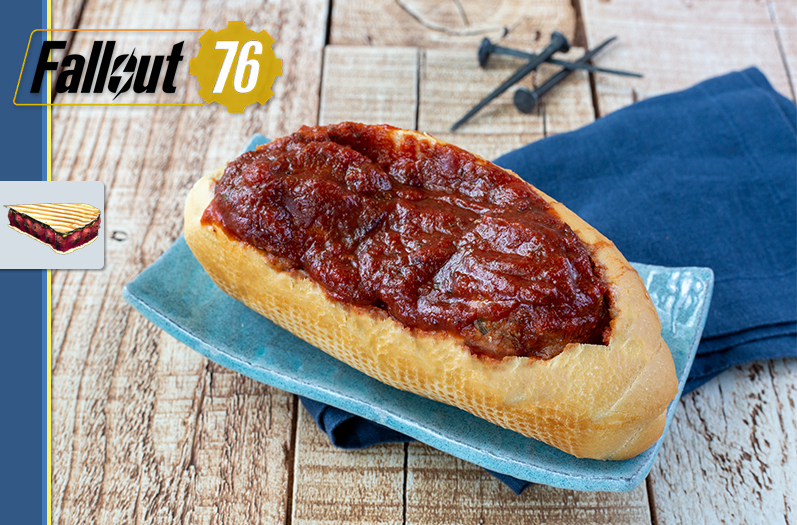

Fallout 76: Cranberry Meatball Grinders

The infamous "Big Papa Moe’s lip smackin’ sandwiches"!
A sandwich that literally irradiates energy. Don't worry about the scorchbeast meat - this is a prewar version!
Ingredients
Cranberry Sauce
- 2 Cups of cranberries
- 1/3 Cups of orange juice
- 2 Tablespoons of lemon juice
- 2 Tablespoons of orange zest
- 2 Tablespoons of lemon zest
- 1/4 Cup of sugar
- 1/4 Cup of honey
- 6 Oz of tomato paste
- 15 Oz of tomato sauce
- 1/2 Cup of water
- 1 Tablespoon of salt
- 2 Tablespoon of oregano
- 1 Tablespoon of garlic powder
- 2 Tablespoons of Onion Powder
Meatballs
- 1 Tablespoon of olive oil
- 2 Shallots (chopped)
- 3 Garlic cloves (minced)
- 1 lb Ground lamb
- 1 lb Ground chicken
- 1/2 Cup of panko
- 1 Egg
- 1 Tablespoon of salt
- 2 Tablespoons of fennel seeds
- 1/2 Tablespoons of pepper
- 1/4 Cups of minced parsley
Steps
- Combine the cranberries, orange juice, lemon juice, orange zest, lemon zest, sugar, and honey in a medium saucepan over medium-high heat. Stir together and bring to a boil. Reduce to low and allow to simmer for 10 minutes, allowing the cranberries to split open.
- Lightly mash the cranberries. Add the tomato paste and mix together well. Add the tomato sauce, water, salt, oregano, garlic powder, and onion powder. Let simmer for 5 minutes. Set aside until the meatballs are cooked.
- Heat a pan with olive oil over medium-high heat. Add the shallots and cook until just softened. Add the garlic and cook for another 2 minutes. Remove from the heat and place on a plate with a paper towel to drain the excess oil. Allow to cool completely.
- Combine the ground lamb, ground chicken, panko, egg, salt, fennel seed, pepper, parsley, and cooked shallots in a large bowl. Stir together until just combined. Split into 80 gram meatballs, you should end up with about 14 – 17.
- Heat a large pan with canola oil over medium-high heat. Add the meatballs and brown each side and cook through. Add the cranberry sauce to the pan and simmer over medium heat for 5 to 10 minutes. Serve on a bun and top with giardiniera.